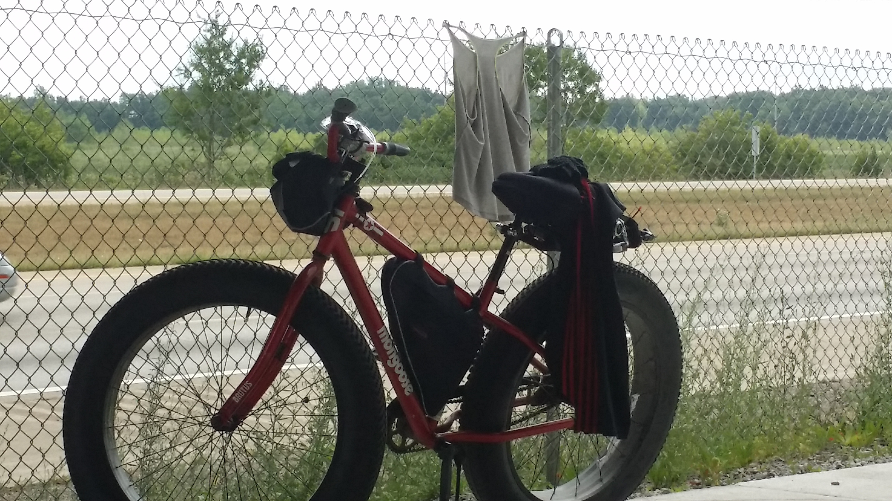
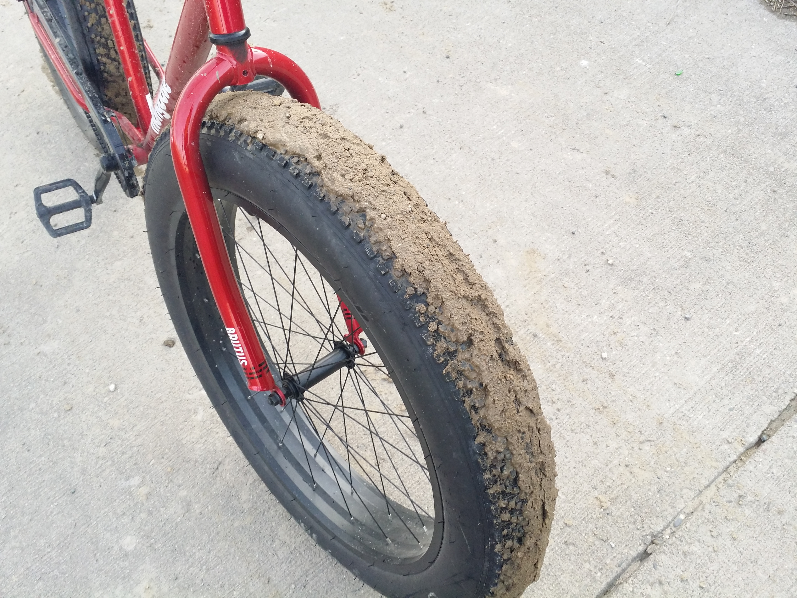

Riding The Trail
I like riding around on my bicycle,
but today I felt like an icicle.
Just got back from this years first long ride,
I feel cheerful and mighty satisfied.
All the cute creatures are still there,
and thankfully, still no signs of angry bear.
Riding alone, I reminisced about a warmer time,
when a car slowed down and screamed like there was some crime.
I had no idea what they were saying,
but waiving their hands, it was a danger they were portraying.
But, I was like, "Oh, whopped do, who knows..."
and in the next moment, I had to take off most of my clothes.

I have never been in such great rain,
it was like standing next to a burst water main.
I loved it, the rain was fragrant, fresh and warm,
I could never call that a storm.
The sun came out instantly, I was like "K. rain, thanks, bye.",
and then I had to hang out all my clothes to dry.
The 13 mile ride back home was full of mud,
I had to lift my legs, and will my bike across a flood.

I am so glad no one will ever know about this,
but still, these are the memorable moments
that make me reminisce.